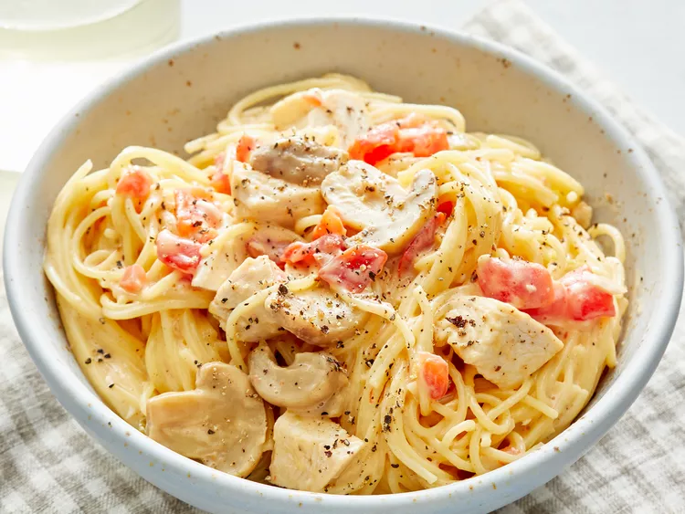

Easy Recipes
Recipe 1: Quick and Easy Chicken Spaghetti

Description
This chicken spaghetti recipe is quick and easy to make, yet is hearty and delicious. It's a great way to use leftover chicken!
Ingridients
- 1 (12 ounce) package angel hair pasta: This quick recipe starts with a package of angel hair pasta. You can use regular spaghetti noodles if you prefer.
- 2 cups chopped cooked chicken breast: Use two cups of cooked chicken breasts. If you’re really in a rush, use leftovers or rotisserie chicken.
- 1 (10.75 ounce) can condensed cream of chicken soup: A can of condensed cream of chicken soup gives the sauce a rich and creamy texture.
- 1 (10 ounce) can diced tomatoes with green chile peppers: You’ll need a can of diced tomatoes with green chile peppers for the flavorful spaghetti sauce.
- ¾ (8 ounce) package processed cheese, cubed: Cubed packaged processed cheese is a convenient ingredient that ups the creaminess factor.
- ½ (4 ounce) jar sliced mushrooms, drained: Chopped jarred mushrooms lend flavor and texture. If you like, you can also add other veggies (like onions or bell peppers).
- Seasonings-salt and pepper to taste: Season the chicken spaghetti with salt and pepper to taste. If you prefer a spicy spaghetti, add some crushed red pepper.
Steps: How to Make Chicken Spaghetti
- Step 1: Bring a large pot of lightly salted water to a boil. Cook angel hair pasta in the boiling water, stirring occasionally, until tender yet firm to the bite, 4 to 5 minutes. Drain pasta and return it to the pot.
- Step 2: Add chopped chicken, condensed soup, diced tomatoes with chile peppers, processed cheese, mushrooms, salt, and pepper.
- Step 3: Cook and stir over low heat until cheese is melted and mixture is heated through, about 5 minutes.